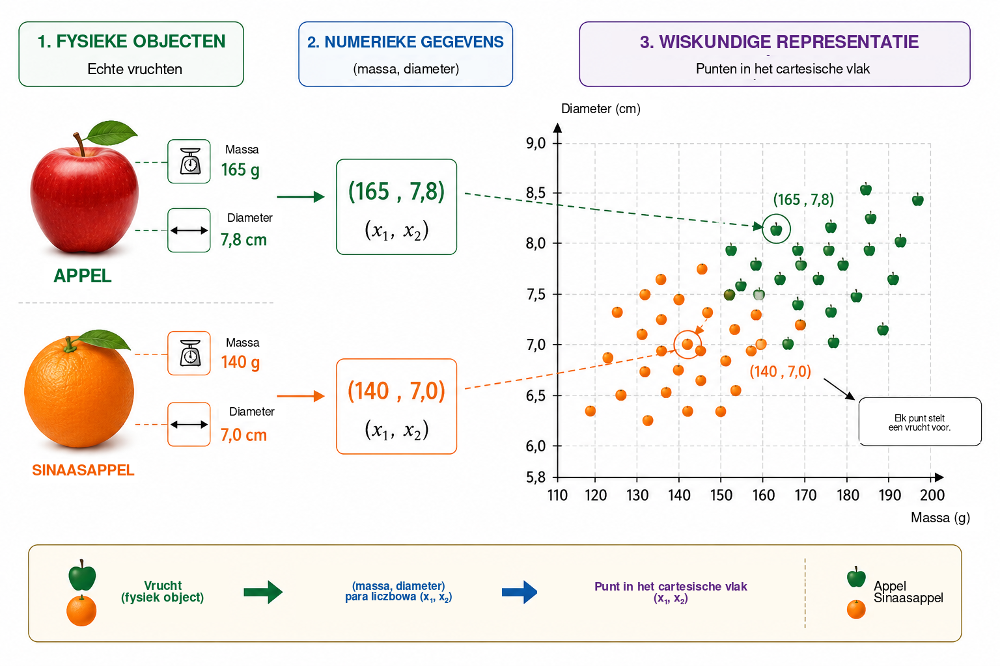
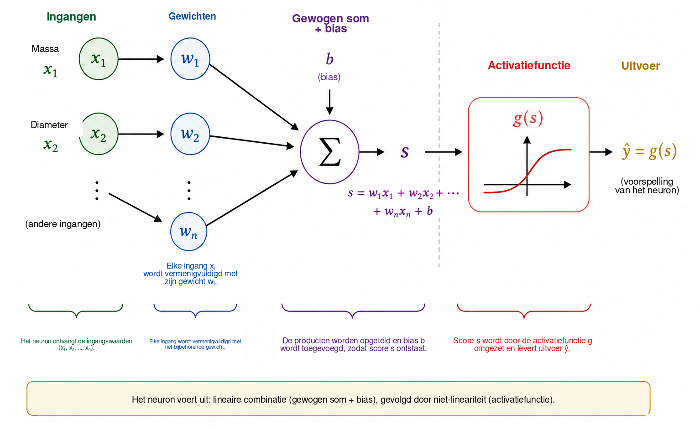
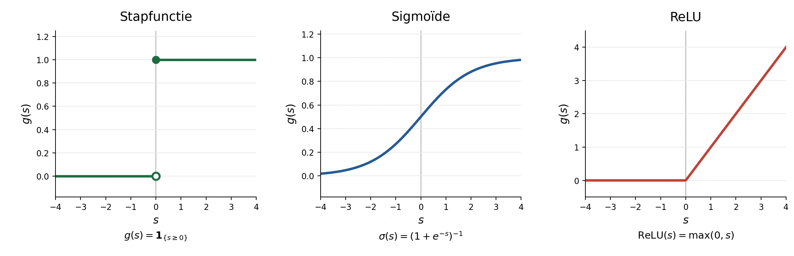
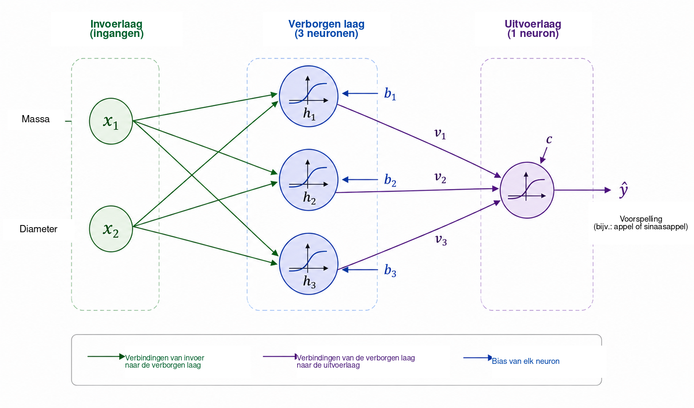
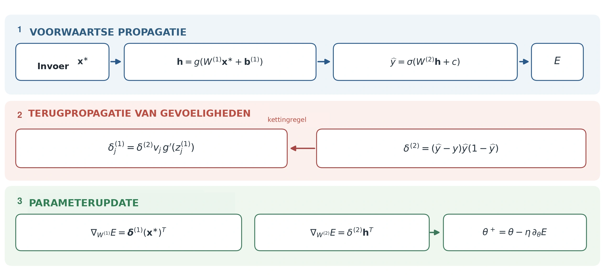
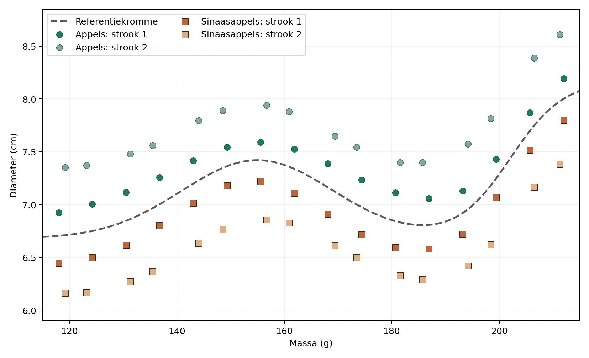
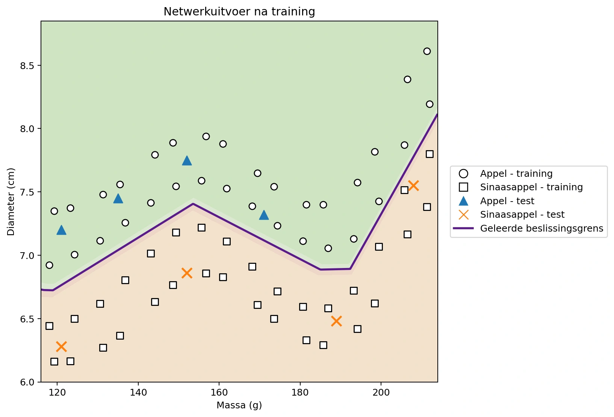

Wanneer kan een computer leren?
In het dagelijks leven nemen we bijna ongemerkt classificatiebeslissingen. Door naar een vrucht te kijken, herkennen we snel of het een appel of een sinaasappel is; wanneer er een bericht op een telefoon binnenkomt, onderscheiden we een legitiem gesprek van ongewenste reclame; bij medische analyses kunnen verschillende metingen worden gecombineerd om een beslissing te ondersteunen; en in financiële instellingen worden meerdere gegevens beoordeeld voordat krediet wordt verleend. In al deze voorbeelden worden verschillende kenmerken gezamenlijk beschouwd om tot een antwoord te komen.
In veel traditionele computerprogramma’s worden de regels die dit antwoord opleveren expliciet door de programmeur geschreven. Deze aanpak werkt goed wanneer de regels bekend zijn en duidelijk kunnen worden geformuleerd. Ze wordt minder doeltreffend wanneer de gegevens sterk variëren of wanneer het moeilijk is vooraf alle voorwaarden voor een goede beslissing te formuleren. Dit leidt tot een natuurlijke vraag:
Kunnen we een programma bouwen dat een beslissingsregel uit voorbeelden leert, in plaats van de regel vooraf te ontvangen?
Dit is een van de centrale ideeën van machine learning, een gebied van de kunstmatige intelligentie dat methoden bestudeert waarmee modellen uit gegevens worden aangepast . Bij begeleid leren ontvangt het algoritme voorbeelden samen met de juiste antwoorden en zoeken we een model dat ook bruikbare voorspellingen kan doen voor gevallen die niet tijdens de training zijn gebruikt. Van de vele modellen die voor dit doel zijn ontwikkeld, zijn kunstmatige neurale netwerken belangrijk geworden in toepassingen zoals beeldherkenning, taalverwerking, signaalanalyse en voorspelling van tijdreeksen .
Het gebruik van neurale netwerken als brug tussen wiskunde, computationele methoden en onderwijs is al besproken in Professor de Matemática Online door Batista en Martins , die een activiteit presenteren rond lerarenopleiding, Python en cijferherkenning. Dit artikel volgt een aanvullende route. Ons voornaamste doel is de interne wiskunde van een klein neuraal netwerk zichtbaar te maken, te beginnen met analytische meetkunde en stap voor stap verder te gaan naar de berekening van gradiënten en een handmatige implementatie van terugpropagatie.
Ondanks de verfijning van moderne toepassingen kan de wiskundige kern van een neuraal netwerk worden ingevoerd met betrekkelijk vertrouwde ideeën. Op basaal niveau is een neuraal netwerk een compositie van functies waarvan de parameters uit gegevens worden aangepast. We beginnen met een eenvoudig meetkundig probleem, interpreteren een scheidende rechte opnieuw als een kunstmatig neuron, verbinden meerdere neuronen, bestuderen de rol van activatiefuncties en laten zien hoe afgeleiden kunnen worden gebruikt om de netwerkparameters automatisch aan te passen. Daarna implementeren we een volledig klein voorbeeld in Python, met een directe overeenkomst tussen de vergelijkingen en de code.
Het probleem wiskundig representeren
Om te begrijpen hoe een neuraal netwerk werkt, beginnen we met een bewust eenvoudig probleem: appels van sinaasappels onderscheiden. Een vrucht heeft veel kenmerken die hierbij nuttig kunnen zijn, zoals kleur, massa, diameter, textuur en aroma. Een eerste wiskundig model hoeft echter niet al deze complexiteit te bevatten. We gebruiken slechts twee eenvoudig meetbare grootheden: massa, in gram, en diameter, in centimeter.
Elke vrucht wordt daarom voorgesteld door een geordend paar \[(x_1,x_2),\] waarbij \[x_1=\text{massa} \qquad\text{en}\qquad x_2=\text{diameter}.\]
Het paar \((155,\;7.2)\) stelt dus een vrucht voor met een massa van \(155\) g en een diameter van \(7.2\) cm. Door het fysieke object te vervangen door twee numerieke metingen koppelen we elke vrucht aan een punt in het cartesische vlak: de eerste coördinaat geeft de massa en de tweede de diameter. Figuur 1 illustreert deze representatie voor een hypothetische verzameling appels en sinaasappels.

Deze transformatie verandert de schijnbare aard van het probleem. In plaats van rechtstreeks te vragen hoe een appel of een sinaasappel kan worden herkend, kunnen we een meetkundige vraag stellen: hoe kunnen de punten die tot de twee klassen behoren in het vlak worden gescheiden? Deze verandering van gezichtspunt is fundamenteel in machine learning. Beelden, teksten, geluiden en experimentele signalen moeten allemaal worden omgezet in numerieke representaties voordat een algoritme ze kan verwerken. In ons voorbeeld heeft elk object slechts twee coördinaten; in reële toepassingen kan een representatie honderden, duizenden of zelfs miljoenen componenten bevatten. Het principe blijft hetzelfde: elk voorbeeld wordt gekoppeld aan een verzameling getallen en het model zoekt een regel die deze representatie naar het gewenste antwoord afbeeldt.
We beginnen met de eenvoudigste beschikbare meetkundige regel en vragen of één rechte lijn de appelpunten voldoende van de sinaasappelpunten kan scheiden.
Een rechte lijn als classifier
Zodra elke vrucht als een punt in het cartesische vlak is voorgesteld, wordt classificatie een meetkundig probleem: kan een rechte lijn de appels van de sinaasappels scheiden? Deze vraag vat het basisidee samen van een belangrijke familie van machine-learningmethoden die bekendstaan als lineaire classifiers.
Beschouw een rechte die door de gegevenswolk loopt, zoals weergegeven in Figuur 2. De rechte verdeelt het vlak in twee halfvlakken. Als de meeste appelpunten aan de ene kant liggen en de meeste sinaasappelpunten aan de andere, kan de positie van een nieuwe vrucht ten opzichte van de rechte als classificatieregel worden gebruikt. Nadat massa en diameter zijn gemeten, stellen we de vrucht voor door een punt en bepalen we aan welke kant van de rechte dat punt ligt.

In het cartesische vlak \((x_1,x_2)\) kan een rechte worden beschreven door \[w_1x_1+w_2x_2+b=0, \qquad (w_1,w_2)\neq(0,0).\]
De vector \((w_1,w_2)\) staat loodrecht op de rechte en bepaalt daardoor haar oriëntatie, terwijl de parameter \(b\) bijdraagt aan haar positie. Deze representatie bevat een kleine redundantie: vermenigvuldiging van \(w_1\), \(w_2\) en \(b\) met dezelfde niet-nulle constante levert precies dezelfde rechte op. De parameters die de grens beschrijven zijn dus niet uniek. Hun numerieke interpretatie hangt bovendien af van de schaal van de variabelen. Omdat massa in gram en diameter in centimeter wordt gemeten, mogen de numerieke grootten van \(w_1\) en \(w_2\) niet worden vergeleken zonder rekening te houden met de verschillende eenheden.
De vergelijking van de rechte zelf geeft een eenvoudige manier om te bepalen aan welke kant van de grens een punt ligt. Definieer de score \[s(x_1,x_2)=w_1x_1+w_2x_2+b.\]
Als \(s(x_1,x_2)=0\), ligt het punt op de rechte. Als \(s(x_1,x_2)>0\), ligt het in het ene halfvlak; als \(s(x_1,x_2)<0\), ligt het in het andere. Als we afspreken dat positieve scores overeenkomen met appels en negatieve scores met sinaasappels, wordt de regel \[\begin{cases} s(x_1,x_2)\geq 0 & \Longrightarrow \text{appel},\\ s(x_1,x_2)<0 & \Longrightarrow \text{sinaasappel}. \end{cases}\]
Beschouw bijvoorbeeld de grens gedefinieerd door \[w_1=\frac{1}{10}, \qquad w_2=2, \qquad b=-30.\] Voor een vrucht met massa \(160\) g en diameter \(7.8\) cm, \[\begin{aligned} s &=\frac{1}{10}\times160+2\times7.8-30\\ &=16+15.6-30\\ &=1.6. \end{aligned}\] Omdat de score positief is, ligt het punt in het halfvlak dat we met appels hebben geassocieerd. Deze classifier zou de vrucht dus als appel classificeren.
Niet elke keuze van \(w_1\), \(w_2\) en \(b\) levert een goede classificatie op. Sommige rechten scheiden de twee groepen slecht, terwijl andere minder fouten maken. Het leerprobleem bestaat er precies in eerder gelabelde voorbeelden te gebruiken om parameterwaarden te bepalen die een maat voor de modelfout verkleinen. In plaats van de positie van de rechte rechtstreeks te programmeren, willen we dat het algoritme zijn coëfficiënten op basis van de gegevens aanpast.
Eén rechte kan goed werken wanneer de klassen ongeveer lineair scheidbaar zijn. Complexere gegevensverzamelingen kunnen een niet-lineaire grens vereisen. Voordat we die beperking behandelen, interpreteren we de zojuist geconstrueerde classifier opnieuw als een elementaire rekeneenheid: een kunstmatig neuron.
Het kunstmatige neuron
In de vorige sectie werd de uitdrukking \[s=w_1x_1+w_2x_2+b\] gebruikt om te bepalen aan welke kant van een rechte een vrucht ligt. Dezelfde uitdrukking kan worden gezien als de eerste stap van de berekening die door een kunstmatig neuron wordt uitgevoerd. Een neuron ontvangt numerieke ingangen, combineert die met gewichten en een bias en past vervolgens een wiskundige functie toe om zijn uitvoer te verkrijgen.
In ons voorbeeld zijn de ingangen de massa \(x_1\) en de diameter \(x_2\). Elke ingang wordt vermenigvuldigd met een parameter die een gewicht wordt genoemd; de producten worden opgeteld samen met een constante term \(b\), de bias. Figuur 3 toont deze berekening schematisch.

De gewichten bepalen hoe veranderingen in de ingangen de score beïnvloeden. Als \(x_2\) en alle andere grootheden constant worden gehouden, verandert een variatie \(\Delta x_1\) de score \(s\) met \(w_1\Delta x_1\). Op dezelfde manier verandert een variatie \(\Delta x_2\) de score met \(w_2\Delta x_2\). Ook het teken is van belang: een positief gewicht zorgt ervoor dat een toename van de ingang de score verhoogt, terwijl een negatief gewicht het tegenovergestelde effect heeft. Deze interpretatie moet voorzichtig worden gebruikt wanneer verschillende variabelen verschillende eenheden en schalen hebben. Daarom worden invoergegevens in praktische implementaties vaak vóór de training genormaliseerd of gestandaardiseerd.
De bias \(b\) is de constante term in de affiene transformatie. Meetkundig maakt hij het mogelijk de beslissingsgrens te verschuiven. Als \(b=0\), dwingt de vergelijking \[w_1x_1+w_2x_2=0\] de rechte door de oorsprong te gaan. Met een bias kan de grens naar andere posities verschuiven. Equivalent geldt dat, wanneer \(x_1=x_2=0\), de score eenvoudig \(s=b\) is.
De score hoeft niet de uiteindelijke uitvoer van het neuron te zijn. In het algemeen wordt er een activatiefunctie \(g\) op toegepast: \[\widehat{y}=g(s)=g\left(w_1x_1+w_2x_2+b\right).\] De berekening bestaat dus uit twee stappen, \[\begin{aligned} s &= w_1x_1+w_2x_2+b,\\[4pt] \widehat{y} &= g(s). \end{aligned}\]
Met de parameterwaarden uit de vorige sectie krijgen we \(s=1.6\). Als we de stapfunctie kiezen \[g(s)= \begin{cases} 1, & s\geq0,\\ 0, & s<0, \end{cases}\] dan is \(\widehat{y}=g(1.6)=1\). Volgens onze conventie wordt de vrucht als appel geclassificeerd. Met deze activatie verandert de beslissing wanneer \(s\) nul passeert, zodat de klassengrens precies \[w_1x_1+w_2x_2+b=0.\]
Een enkel neuron is dus een eenvoudig wiskundig object met aanpasbare parameters. De werkelijke betekenis ervan ontstaat wanneer veel van zulke eenheden met elkaar worden verbonden. Voordat we een netwerk bouwen, moeten we echter begrijpen waarom de activatiefunctie essentieel is.
Waarom hebben we een activatiefunctie nodig?
Een neuron berekent eerst een score met een affiene transformatie en past pas daarna een activatiefunctie toe. Deze tweede stap is essentieel als een neuraal netwerk complexe relaties moet kunnen representeren. Stel om dit te zien een netwerk voor waarin geen activatiefuncties worden gebruikt. Elke eenheid zou dan de vorm hebben \[y=w_1x_1+w_2x_2+b.\]
Voor een eendimensionaal voorbeeld nemen we aan dat een eerste eenheid produceert \[h=ax+b\] en dat een tweede berekent \[y=ch+d.\] Invullen geeft \[y=c(ax+b)+d=acx+(cb+d),\] wat nog steeds een affiene functie van \(x\) is. Hetzelfde geldt in meerdere dimensies: een compositie van affiene transformaties blijft affien. Het toevoegen van veel lagen zonder een niet-lineaire bewerking maakt het netwerk daarom niet fundamenteel expressiever; de volledige compositie zou door één affiene transformatie kunnen worden vervangen.
Een activatiefunctie doorbreekt deze beperking. Nadat de score \(s\) is berekend, past het neuron een doorgaans niet-lineaire afbeelding toe \[h=g(s).\] Wanneer meerdere van zulke eenheden worden verbonden, kan de resulterende compositie niet langer tot één affiene transformatie worden gereduceerd. Daardoor kan het netwerk complexere beslissingsgrenzen construeren.
De eenvoudigste activatie is de stapfunctie, \[g(s)= \begin{cases} 1, & s\geq0,\\ 0, & s<0. \end{cases}\] Ze levert een binaire beslissing en is zeer nuttig om classificatie te begrijpen. Haar afgeleide is echter nul voor \(s\neq0\) en niet gedefinieerd bij \(s=0\). Omdat training op basis van gradiënten afgeleiden gebruikt om te bepalen hoe de parameters moeten veranderen, is de stapfunctie niet geschikt voor dat trainingsmechanisme.
Een alternatief is de sigmoïdefunctie, \[\sigma(s)=\frac{1}{1+e^{-s}}.\] Ze beeldt elk reëel getal af op een waarde strikt tussen \(0\) en \(1\). Voor zeer negatieve \(s\) nadert de uitvoer \(0\); voor zeer positieve \(s\) nadert hij \(1\); tussen deze uitersten verloopt de overgang glad. De sigmoïde is overal differentieerbaar, met \[\sigma'(s)=\sigma(s)\bigl(1-\sigma(s)\bigr).\] Omdat de uitvoer tussen \(0\) en \(1\) ligt, wordt de sigmoïde vaak gebruikt in de uitvoerlaag van een binaire classifier. Binnen een probabilistische formulering met een geschikte verliesfunctie kan de uitvoer worden geïnterpreteerd als een schatting van de kans op de klasse die door \(1\) wordt voorgesteld. In verborgen lagen kan de sigmoïde echter een probleem veroorzaken: voor ingangen met grote absolute waarde wordt haar afgeleide zeer klein, wat bijdraagt aan het vanishing-gradient-probleem in diepe netwerken.
Een veelgebruikte activatie in verborgen lagen is de ReLU (Rectified Linear Unit), \[\operatorname{ReLU}(s)=\max(0,s) = \begin{cases} 0, & s<0,\\ s, & s\geq0. \end{cases}\] Hoewel ReLU uit twee lineaire stukken bestaat, is de functie niet globaal lineair. De afgeleide is \(0\) voor \(s<0\) en \(1\) voor \(s>0\). Bij \(s=0\) bestaat de gewone afgeleide niet en gebruiken software-implementaties een conventie voor de gradiënt. Voor positieve ingangen wordt de afgeleide niet kleiner wanneer \(s\) groeit, waardoor een van de verzadigingsmechanismen van de sigmoïde wordt vermeden.
Figuur 4 vergelijkt deze drie activaties visueel: de abrupte sprong van de stapfunctie, de gladde overgang van de sigmoïde en de verandering van helling van ReLU.

Hun belangrijkste eigenschappen zijn hieronder samengevat.
| Functie | Uitvoer | Afgeleide | Typisch gebruik |
|---|---|---|---|
| Stapfunctie | \(\{0,1\}\) | Nul voor \(s\neq0\); niet gedefinieerd bij \(s=0\) | Historische modellen en didactische voorbeelden |
| Sigmoïde | \((0,1)\) | Bestaat voor elke \(s\) | Uitvoerlaag bij binaire classificatie |
| ReLU | \([0,\infty)\) | \(0\) for \(s<0\) and \(1\) for \(s>0\) | Verborgen lagen |
De details van deze functies verschillen, maar hun gemeenschappelijke conceptuele rol is het introduceren van niet-lineariteit. Juist die niet-lineariteit stelt het kleine netwerk in de volgende sectie in staat relaties te representeren die niet door één rechte lijn kunnen worden beschreven.
Voor lezers die verder willen gaan, biedt Haykin een klassieke behandeling van neurale netwerken, terwijl Goodfellow, Bengio en Courville activatiefuncties en de training van diepe netwerken in een bredere context bespreken. De vrij beschikbare tekst van Nielsen is bijzonder toegankelijk om intuïtie te ontwikkelen over neuronen, activaties en leren.
Een klein neuraal netwerk bouwen
We beschouwen nu een netwerk met twee ingangen, één verborgen laag met drie neuronen en één uitvoerneuron. De ingangen blijven \[x_1=\text{massa}, \qquad x_2=\text{diameter},\] en beide worden aan elk verborgen neuron aangeboden, zoals weergegeven in Figuur 5.

Noem de uitgangen van de verborgen laag \(h_1\), \(h_2\) en \(h_3\). Elk neuron ontvangt dezelfde twee ingangen, maar heeft zijn eigen gewichten en bias: \[\begin{aligned} h_1&=g\left(w_{11}x_1+w_{12}x_2+b_1\right),\\[4pt] h_2&=g\left(w_{21}x_1+w_{22}x_2+b_2\right),\\[4pt] h_3&=g\left(w_{31}x_1+w_{32}x_2+b_3\right). \end{aligned}\]
Hoewel alle drie de neuronen dezelfde massa en diameter ontvangen, kunnen zij verschillende antwoorden produceren omdat hun parameters verschillen. Tijdens de training worden deze parameters zo aangepast dat de tussenliggende activaties nuttig worden voor classificatie.
De drie grootheden \(h_1\), \(h_2\) en \(h_3\) worden vervolgens doorgegeven aan het uitvoerneuron, dat berekent \[s_{\mathrm{out}}=v_1h_1+v_2h_2+v_3h_3+c\] en produceert \[\widehat{y}=g_{\mathrm{out}}\left(s_{\mathrm{out}}\right).\] Voor ons binaire probleem gebruiken we een sigmoïde uitvoer: \[\widehat{y}=\sigma\left(v_1h_1+v_2h_2+v_3h_3+c\right), \qquad 0<\widehat{y}<1.\]
Met \(y=1\) voor appel en \(y=0\) voor sinaasappel geeft een drempel van \(0.5\) de klassebeslissing \[\widehat{y}\geq0.5 \Longrightarrow \text{appel}, \qquad \widehat{y}<0.5 \Longrightarrow \text{sinaasappel}.\] Waarden dicht bij \(1\) worden dus sterk met appels geassocieerd, terwijl waarden dicht bij \(0\) met sinaasappels worden geassocieerd. Zoals eerder opgemerkt vereist de numerieke interpretatie van \(\widehat{y}\) als kans aanvullende aannames over het model en de training. Voor de hier gebruikte classificatieregel volstaat het \(\widehat{y}\) te beschouwen als een continue netwerkuitvoer.
Het centrale kenmerk van deze architectuur is de tussenrepresentatie \[(x_1,x_2) \longrightarrow (h_1,h_2,h_3) \longrightarrow \widehat{y}.\] Het netwerk ontvangt twee kenmerken en construeert drie nieuwe grootheden voordat het uiteindelijke antwoord wordt geproduceerd. Deze activaties worden niet handmatig gekozen: ze hangen af van de gewichten en biases en veranderen dus wanneer de parameters worden getraind.
Ondanks zijn geringe omvang heeft het netwerk al dertien aanpasbare parameters. De drie verborgen neuronen bevatten \[3(2+1)=9\] parameters, en het uitvoerneuron draagt bij met \[3+1=4.\] Daarom, \[9+4=13.\]
Dezelfde telling wordt transparant in matrixnotatie. Definieer \[\mathbf{x}= \begin{bmatrix} x_1\\x_2 \end{bmatrix}, \qquad W^{(1)}= \begin{bmatrix} w_{11}&w_{12}\\ w_{21}&w_{22}\\ w_{31}&w_{32} \end{bmatrix}, \qquad \mathbf{b}^{(1)}= \begin{bmatrix} b_1\\b_2\\b_3 \end{bmatrix}.\] Dan kan de verborgen laag compact worden geschreven als \[\mathbf{h}=g\left(W^{(1)}\mathbf{x}+\mathbf{b}^{(1)}\right),\] waarbij \(g\) component voor component werkt. Voor de uitvoer, \[\widehat{y} = \sigma\left(W^{(2)}\mathbf{h}+b^{(2)}\right),\] met \[W^{(2)}= \begin{bmatrix} v_1&v_2&v_3 \end{bmatrix}.\]
Deze notatie loopt vooruit op de structuur die in het Python-programma zal verschijnen. Wanneer een vrucht aan de ingang wordt aangeboden en we de opeenvolgende activaties berekenen totdat \(\widehat{y}\) is verkregen, voeren we voorwaartse propagatie of een forward pass uit. De centrale vraag blijft: hoe kunnen de dertien parameters automatisch worden bepaald zodat de voorspellingen bij de gegevens passen?
Hoe leert een neuraal netwerk?
Gewichten en biases zijn niet vooraf bekend: ze worden aangepast met behulp van voorbeelden waarvan de klasselabels bekend zijn. Het leerproces herhaalt de voorwaartse propagatie, de berekening van het verlies, de bepaling van de gradiënten en de parameterupdate (Figuur 6). De kettingregel maakt zichtbaar hoe ieder gewicht en iedere bias het verlies lokaal beïnvloedt.
Voordat we parameters kunnen aanpassen, is een numerieke maat nodig voor het verschil tussen de voorspelling en het verwachte antwoord. Een verliesfunctie kent aan elke voorspelling een strafwaarde toe en maakt het mogelijk verschillende keuzes van gewichten en biases te vergelijken. Anders dan het louter tellen van classificatiefouten onderscheidt een continue verliesfunctie voorspellingen naar hun afstand tot het label en levert zij afgeleiden waarmee de training kan worden gestuurd.
Beschouw een vrucht met massa \(140\) g en diameter \(7.0\) cm, die een sinaasappel is (\(y=0\)). Met \(\widehat y\in(0,1)\) voor de netwerkuitvoer gebruiken we voor één waarneming het kwadratische verlies:
\[\label{eq:perda} E=\frac12(\widehat y-y)^2.\]
Hier is \(y\) het werkelijke klasselabel en \(\widehat y\) de voorspelling. Het verlies is niet-negatief en wordt nul wanneer de voorspelling gelijk is aan het label; een groter verschil \(|\widehat y-y|\) geeft een grotere straf. Voor een sinaasappel leveren de voorspellingen \(0.80\) en \(0.60\) respectievelijk \(E=0.32\) en \(E=0.18\) op. Bij de drempel \(0.5\) classificeren beide de vrucht ten onrechte als appel, maar het verlies onderscheidt welke dichter bij de juiste waarde ligt. De factor \(1/2\) verandert het minimum niet en vereenvoudigt de afleiding.
Het netwerk moet leren uit meerdere voorbeelden, niet uit één vrucht. Voor \(N\) waarnemingen definiëren we het gemiddelde verlies
\[\label{eq:perda_media} J=\frac1N\sum_{i=1}^{N}E_i.\]
Dit gemiddelde vat de aanpassing aan de trainingsgegevens samen en is de grootheid die we door parameterupdates willen verlagen. Het minimaliseren van \(J\) garandeert op zichzelf geen goede voorspellingen voor nieuwe gegevens; hierop komen we terug bij generalisatie. We kiezen het kwadratische verlies uit vergelijking perda vanwege de eenvoudige algebra en vergelijken later de gradiënt ervan met die van binaire kruisentropie, zonder het numerieke experiment te wijzigen [2, 3].

Als \(\theta\) een gewicht of bias is, meet \(\partial J/\partial\theta\) de lokale gevoeligheid van het gemiddelde verlies voor deze parameter. Een stap van gradiëntafdaling luidt
\[\label{eq:descida} \theta_{\mathrm{new}}=\theta_{\mathrm{old}}-\eta\frac{\partial J}{\partial\theta},\qquad \eta>0.\]
De leersnelheid \(\eta\) bepaalt de stapgrootte. Bij te kleine waarden kan convergentie langzaam verlopen; te grote waarden kunnen schommelingen of divergentie veroorzaken. Worden de parameters na elke waarneming bijgewerkt, zoals in de code in Sectie 8, dan wordt \(\partial J/\partial\theta\) vervangen door \(\partial E_i/\partial\theta\). Dit is de hier gebruikte vorm van stochastische gradiëntafdaling (SGD).
De kettingregel in het netwerk 2–3–1
We gebruiken het netwerk van Figuur [fig:pequena_rede], met drie verborgen ReLU-neuronen en een sigmoïde uitvoer. De invoer bestaat uit massa (in gram) en diameter (in centimeter), met verschillende numerieke schalen. Om nadelige effecten op de conditionering te beperken, transformeren we elk kenmerk via \(x_j^{\ast}=(x_j-\mu_j)/\sigma_j\), waarbij \(\mu_j\) en \(\sigma_j>0\) de referentiegemiddelde en -standaardafwijking zijn. Zo ontstaan dimensieloze invoerwaarden met vergelijkbare schalen, wat het kiezen van een optimalisatiestap vergemakkelijkt. In het rekenexperiment worden deze statistieken uitsluitend op de trainingsgegevens bepaald om informatielekken vanuit de testgegevens te voorkomen. In het volgende rekenvoorbeeld zijn de centra en schalen alleen voor het gemak vooraf vastgelegd.
Voor de gestandaardiseerde invoer \(\mathbf{x}^{\ast}=(x_1^{\ast},x_2^{\ast})^{\mathsf T}\) is de voorwaartse propagatie
\[\label{eq:forward} \begin{aligned} \mathbf{z}^{(1)}&=W^{(1)}\mathbf{x}^{\ast}+\mathbf{b}^{(1)}, &\mathbf{h}&=\operatorname{ReLU}(\mathbf{z}^{(1)}),\\ z^{(2)}&=W^{(2)}\mathbf{h}+c, &\widehat y&=\sigma(z^{(2)}). \end{aligned}\]
Hier is \(c=b^{(2)}\) de uitvoerbias en \(W^{(2)}=(v_1,v_2,v_3)\). De terugpropagatie begint bij het uitvoerneuron door opeenvolgende toepassingen van de kettingregel:
\[\label{eq:delta_saida} \begin{aligned} \delta^{(2)}:=\frac{\partial E}{\partial z^{(2)}} &=\underbrace{\frac{\partial E}{\partial\widehat y}}_{\widehat y-y} \underbrace{\frac{\partial\widehat y}{\partial z^{(2)}}}_{\widehat y(1-\widehat y)} =(\widehat y-y)\widehat y(1-\widehat y),\\ \frac{\partial E}{\partial v_j}&=\delta^{(2)}h_j, \qquad \frac{\partial E}{\partial c}=\delta^{(2)}. \end{aligned}\]
Omdat iedere activatie \(h_j\) ook afhangt van de gewichten en bias van het betreffende neuron, berekenen we de gevoeligheden van de verborgen neuronen:
\[\label{eq:delta_oculta} \begin{aligned} \delta_j^{(1)}:=\frac{\partial E}{\partial z_j^{(1)}} &=\delta^{(2)}v_j\,\operatorname{ReLU}'(z_j^{(1)}),\\ \frac{\partial E}{\partial w_{jk}} &=\delta_j^{(1)}x_k^{\ast},\qquad \frac{\partial E}{\partial b_j}=\delta_j^{(1)}. \end{aligned}\]
ReLU is in nul niet differentieerbaar; waar nodig kiezen we computationeel \(\operatorname{ReLU}'(0)=0\). De grootheden \(\delta^{(2)}\) en \(\delta_j^{(1)}\) zijn lokale gevoeligheden van het verlies, geen fysieke fouten die door het netwerk stromen. Door ze te hergebruiken kunnen we alle dertien gradiënten berekenen zonder voor ieder gewicht opnieuw te differentiëren.
Een volledige numerieke parameterupdate
Voor overzichtelijke berekeningen kiezen we, uitsluitend in dit voorbeeld, voor massa een centrum van \(160\) g en een schaal van \(20\) g, en voor diameter \(7.5\) cm respectievelijk \(0.5\) cm. De vrucht \((140\,\mathrm{g},7.0\,\mathrm{cm})\) heeft dan als dimensieloze invoer
\[\label{eq:exemplo_entrada} \mathbf{x}^{\ast}=\begin{bmatrix}(140-160)/20\\(7.0-7.5)/0.5\end{bmatrix} =\begin{bmatrix}-1\\-1\end{bmatrix}.\]
Deze referentiewaarden dienen alleen voor deze demonstratie; in Sectie 8 worden gemiddelde en standaardafwijking rechtstreeks op de trainingsgegevens berekend.
We kiezen de dertien beginparameters
\[\label{eq:param_iniciais} W^{(1)}=\begin{bmatrix} 0.2&0.1\\-0.3&0.2\\0.1&-0.4 \end{bmatrix},\quad \mathbf{b}^{(1)}=\begin{bmatrix}\phantom{-}0.5\\\phantom{-}0.2\\-0.5\end{bmatrix},\quad W^{(2)}=\begin{bmatrix}\phantom{-}0.5&-0.4&\phantom{-}0.3\end{bmatrix},\quad c=1.\]
Vergelijking forward levert achtereenvolgens
\[\label{eq:exemplo_forward} \begin{gathered} \mathbf{z}^{(1)}=(0.2,\;0.3,\;-0.2)^{\mathsf T},\qquad \mathbf{h}=(0.2,\;0.3,\;0)^{\mathsf T},\\ z^{(2)}=0.5(0.2)-0.4(0.3)+1=0.98,\\ \widehat y=\sigma(0.98)\simeq0.727108,\qquad E\simeq0.264343. \end{gathered}\]
De aanvankelijke voorspelling behoort tot de verkeerde klasse. Uit vergelijkingen delta_saida en delta_oculta volgt
\[\label{eq:exemplo_gradientes} \begin{gathered} \delta^{(2)}\simeq0.144274,\qquad \boldsymbol{\delta}^{(1)}\simeq(0.072137,\;-0.057710,\;0)^{\mathsf T},\\ \frac{\partial E}{\partial W^{(2)}}\simeq (0.028855,\;0.043282,\;0),\qquad \frac{\partial E}{\partial W^{(1)}}\simeq \begin{bmatrix}-0.072137&-0.072137\\\phantom{-}0.057710&\phantom{-}0.057710\\\phantom{-}0&\phantom{-}0\end{bmatrix}. \end{gathered}\]
Het derde verborgen neuron is inactief (\(z_3^{(1)}<0\)), zodat de gradiënten van zijn invoergewichten en bias in deze stap nul zijn. Met \(\eta=0.05\) passen we \(\theta_{\mathrm{new}}=\theta_{\mathrm{old}}-0.05\,\partial E/\partial\theta\) gelijktijdig op alle parameters toe. Tabel 1 toont enkele van de dertien updates; de overige worden op dezelfde manier berekend.
| Parameter \(\theta\) | Beginwaarde | \(\partial E/\partial\theta\) | Nieuwe waarde |
|---|---|---|---|
| \(v_1\) | \(0.500000\) | \(0.028855\) | \(0.498557\) |
| \(v_2\) | \(-0.400000\) | \(0.043282\) | \(-0.402164\) |
| \(c\) | \(1.000000\) | \(0.144274\) | \(0.992786\) |
| \(w_{11}\) | \(0.200000\) | \(-0.072137\) | \(0.203607\) |
| \(w_{21}\) | \(-0.300000\) | \(0.057710\) | \(-0.302885\) |
| \(b_1\) | \(0.500000\) | \(0.072137\) | \(0.496393\) |
| \(w_{31}\) | \(0.100000\) | \(0\) | \(0.100000\) |
Een nieuwe voorwaartse propagatie met alle bijgewerkte parameters geeft \(\widehat y_{\mathrm{new}}\simeq0.723717\) en \(E_{\mathrm{new}}\simeq0.261883\): het verlies is na één stap kleiner geworden. De voorspelde klasse is nog niet veranderd, zoals te verwachten is. Leren vergt herhaling over veel waarnemingen en tijdperken.
Kwadratisch verlies en kruisentropie
Kwadratisch verlies is geschikt om de kettingregel uit te leggen. Bij binaire classificatie met een sigmoïde uitvoer wordt echter ook vaak binaire kruisentropie gebruikt. Voor \(y\in\{0,1\}\) en \(\widehat y=\sigma(z)\) is het verlies voor één waarneming
\[\label{eq:entropia_cruzada} E_{\mathrm{CE}}=-y\ln\widehat y-(1-y)\ln(1-\widehat y).\]
Terwijl kwadratisch verlies de numerieke afwijking tussen voorspelling en label bestraft, bestraft kruisentropie vooral voorspellingen die weinig kans toekennen aan het waargenomen label, wanneer \(\widehat y\) als kans op klasse \(1\) wordt geïnterpreteerd. Het belangrijkste verschil voor de training verschijnt bij differentiatie naar de score \(z\) van het uitvoerneuron. Met de kettingregel en \(\sigma'(z)=\widehat y(1-\widehat y)\) vinden we
\[\label{eq:derivada_entropia_cruzada} \begin{aligned} \frac{\partial E_{\mathrm{CE}}}{\partial z} &=\left(-\frac{y}{\widehat y}+\frac{1-y}{1-\widehat y}\right) \widehat y(1-\widehat y) =\widehat y-y,\\ \frac{\partial E_{\mathrm{SE}}}{\partial z} &=(\widehat y-y)\widehat y(1-\widehat y), \qquad E_{\mathrm{SE}}=\tfrac12(\widehat y-y)^2. \end{aligned}\]
Ter illustratie van alleen dit verschil nemen we een voorspelling \(\widehat y=0.80\) voor een sinaasappel (\(y=0\)). Dan zijn \(E_{\mathrm{SE}}=0.32\) en \(E_{\mathrm{CE}}=-\ln(0.20)\simeq1.60944\), terwijl hun afgeleiden naar \(z\) respectievelijk \(0.128\) en \(0.80\) bedragen. Bij \(\eta=0.05\) zou de afzonderlijke update van de uitvoerbias, waarvoor \(\partial E/\partial c=\partial E/\partial z\), gelijk zijn aan \(\Delta c=-0.0064\) met kwadratisch verlies en \(\Delta c=-0.0400\) met kruisentropie. De illustratieve voorspelling \(0.80\) vervangt niet de waarden van het volledige rekenvoorbeeld hierboven.
Bij kruisentropie vermenigvuldigt de factor \(\widehat y(1-\widehat y)\) de gevoeligheid van de uitvoerlaag niet langer. Hierdoor verdwijnt in die laag de extra verzwakking van de gradiënt door verzadiging van de sigmoïde bij sterk onjuiste voorspellingen. Kleine gradiënten in andere lagen verdwijnen daardoor niet en een snellere training is niet altijd gegarandeerd. De numerieke waarden van de twee verliesfuncties hebben verschillende schalen en mogen niet rechtstreeks als kwaliteitsmaten worden vergeleken. De hoofdcode blijft kwadratisch verlies gebruiken, zodat de voorgaande update volledig reproduceerbaar is; in het aanvullende notebook staat de vergelijking zonder wijziging van de training.
Tijdperken en generalisatie
Een volledige doorloop van de trainingsvoorbeelden heet een tijdperk (epoch). De code in de volgende sectie schudt de voorbeelden per tijdperk en werkt de parameters bij na elke vrucht. De architectuur blijft vast, maar gewichten, biases en de beslissingsgrens veranderen. Een kleiner trainingsverlies betekent niet noodzakelijk goede voorspellingen op ongeziene gegevens. Dat vermogen heet generalisatie; als te sterke aanpassing aan trainingsvoorbeelden nieuwe voorspellingen verslechtert, spreken we van overfitting. In uitgebreidere studies maken afzonderlijke trainings-, validatie- en testverzamelingen het mogelijk hyperparameters te kiezen en de prestaties met minder vertekening te beoordelen [2, 3].
Van wiskunde naar Python
We implementeren nu de voorwaartse propagatie, de kettingregel en de
hierboven afgeleide stochastische updates met uitsluitend
NumPy [4]. Om een niet-lineaire grens te
tonen, breiden we de verborgen laag uit van drie naar twaalf
ReLU-neuronen. Het resulterende \(2\)–\(12\)–\(1\)-netwerk heeft \(12(2+1)+(12+1)=49\) parameters en gebruikt
dezelfde vergelijkingen.
Synthetische gegevens voor een demonstratie
Het experiment gebruikt \(64\) synthetische trainingsvoorbeelden in vier stroken van elk \(16\) punten in het massa–diametervlak, plus acht aanvullende waarnemingen voor een louter illustratieve test. Twee stroken met appels liggen boven een referentiekromme en twee met sinaasappels eronder. Kleine deterministische verschuivingen voorkomen een perfect regelmatig patroon. De getallen zijn uitsluitend gekozen voor een visueel aannemelijke verdeling en een niet-lineaire beslissingsgrens; het zijn geen experimentele metingen en geen fysisch model van fruit.
De referentiekromme dient uitsluitend om de voorbeelden te genereren. Het netwerk krijgt haar niet als invoer, ze staat niet in de verliesfunctie en speelt geen rol bij de terugpropagatie. De training gebruikt alleen massa–diameterparen en hun labels. De formule en de verschuivingen zijn beschreven in Bijlage A, zodat de punten in Figuur 7 exact zijn te reproduceren.

Figuur 7 laat de punten uit
construct_data() zien. De gestreepte kromme hoort
uitsluitend bij de synthetische constructie en is geen geleerde
beslissingsgrens. De acht extra voorbeelden dienen alleen voor de
uiteindelijke illustratie en worden niet gebruikt om de
standaardisatiestatistieken te berekenen.
Standaardisatie en trainingskeuzes
Omdat massa en diameter verschillende eenheden en schalen hebben, wordt elk invoerkenmerk omgezet in een dimensieloze variabele:
\[\label{eq:padronizacao} x_j^{\ast}=\frac{x_j-\mu_j}{\sigma_j},\quad \mu_j=\frac1N\sum_{i=1}^N x_{ij},\quad \sigma_j=\sqrt{\frac1N\sum_{i=1}^N(x_{ij}-\mu_j)^2}.\]
Het gemiddelde \(\mu_j\) centreert kenmerk \(j\) en de standaardafwijking \(\sigma_j\) schaalt het; hier is \(N=64\). Beide statistieken worden uitsluitend uit de trainingsgegevens berekend en ongewijzigd op testwaarnemingen toegepast. Hierbij veronderstellen we \(\sigma_j>0\). Dezelfde transformatie wordt gebruikt voor de netwerkgegevens en voor het raster waarop voorspellingen worden berekend.
De gewichten krijgen beginwaarden uit een normale verdeling met
gemiddelde nul en standaardafwijking \(0.1\), bij een vast toevalszaad \(42\). Kleine willekeurige waarden
doorbreken de symmetrie tussen verborgen neuronen; de normale verdeling
is een eenvoudige keuze, geen universele regel. Voor grotere netwerken
moet de initialisatieschaal rekening houden met architectuur en
activaties. De biases beginnen op nul. ReLU heeft bij \(s=0\) geen afgeleide; de functie
relu_derivative() kiest daar bij conventie nul, zonder dat
dit de wiskundige definitie wijzigt of op zichzelf convergentie
garandeert.
We gebruiken \(\eta=0.05\) als voorzichtige keuze, niet als optimale leersnelheid. Een eenvoudige gevoeligheidsanalyse met dezelfde gegevens en hetzelfde toevalszaad geeft Tabel 2 na \(1000\) tijdperken. De grootste onderzochte leersnelheid convergeert in deze verzameling sneller, maar daaruit volgt geen algemene geschiktheid. We behouden \(0.05\) vanwege de stabiele training en het overzichtelijke verloop van het verlies.
| \(\eta\) | Gemiddeld verlies \(J\) | Correct van \(64\) |
|---|---|---|
| \(0.005\) | \(0.041871\) | \(55\) |
| \(0.05\) | \(0.006485\) | \(64\) |
| \(0.2\) | \(0.000106\) | \(64\) |
Volledige implementatie in Python
Het volledige programma staat in Code 1–10, geordend naar
functie en uitvoervolgorde. Deze tien opeenvolgende blokken vormen samen
neural_network.py, dat ook als aanvullend bestand
beschikbaar is.
01 — Voorbereiding van de omgeving
"""Didactisch voorbeeld: fruitclassificatie met een 2-12-1-netwerk.
Afhankelijkheden: numpy en matplotlib. Uitvoering: python neural_network.py.
"""
import numpy as np
import matplotlib.pyplot as plt
from matplotlib.lines import Line2D
02 — ReLU-activering
def relu(s):
"""Activatie van de verborgen laag: ReLU(s) = max(0,s)."""
return np.maximum(0, s)
03 — Computationele afgeleide van ReLU
def relu_derivative(s):
# ReLU is niet differentieerbaar bij s=0; de berekende afgeleide wordt daar nul.
# Dit is uitsluitend een conventie voor de terugpropagatiestap.
return (s > 0).astype(float)
04 — Sigmoïde activering
def sigmoid(s):
"""Uitvoeractivatie met waarden tussen 0 en 1."""
return 1 / (1 + np.exp(-s))
05 — Hulpkromme voor gegevensgeneratie
def reference_curve(m):
# Kunstmatige kromme (cm): verschuiving, Gaussische piek, logistische stijging.
# De constanten geven een niet-lineaire referentiekromme;
# ze zijn geen metingen en geen geschatte parameters.
return (6.68 + 0.74*np.exp(-((m-155)/20)**2)
+ 1.50/(1 + np.exp(-(m-202)/5)))
06 — Synthetische trainings- en illustratieve testgegevens
def construct_data():
# 16 massapunten in elk van vier stroken: a1, a2, l1, l2.
masses_1 = np.linspace(118, 212, 16)
# Kleine deterministische verschuivingen voorkomen identieke massa’s.
masses_2 = masses_1 + np.array([
1.2, -1.1, 0.8, -1.3, 1.0, -0.8, 1.1, -1.0,
1.3, -0.9, 0.9, -1.2, 1.0, -1.0, 0.8, -0.7
])
k = np.arange(16)
# Appels: twee stroken boven de kromme, met kleine variaties in cm.
a1 = np.column_stack([
masses_1,
reference_curve(masses_1) + 0.22 + 0.05*np.sin(0.8*k)
])
a2 = np.column_stack([
masses_2,
reference_curve(masses_2) + 0.58 + 0.06*np.cos(0.45*k)
])
# Sinaasappels: twee stroken onder de referentiekromme.
l1 = np.column_stack([
masses_1,
reference_curve(masses_1) - (0.22 + 0.04*np.cos(0.7*k))
])
l2 = np.column_stack([
masses_2,
reference_curve(masses_2) - (0.55 + 0.05*np.sin(0.5*k))
])
X_train = np.vstack([a1, a2, l1, l2])
y_train = np.array([1.0]*32 + [0.0]*32)
# Acht illustratieve voorbeelden; geen uitgebreide statistische test.
X_test = np.array([
[121.0, 7.20], [135.0, 7.45],
[152.0, 7.75], [171.0, 7.32],
[121.0, 6.28], [152.0, 6.86],
[189.0, 6.48], [208.0, 7.55]
])
y_test = np.array([1, 1, 1, 1, 0, 0, 0, 0], dtype=float)
return X_train, y_train, X_test, y_test
07 — Voorspellingen via voorwaartse propagatie
def predict(X, mean, std, W1, b1, W2, b2):
# x_j^* = (x_j - mu_j)/sigma_j, met statistieken uitsluitend uit de trainingsgegevens.
Xn = (X - mean) / std
# Voorwaartse stap in matrixnotatie (een rij per vrucht).
h = relu(Xn @ W1.T + b1)
return sigmoid(h @ W2 + b2)
08 — Training via terugpropagatie en gradiëntafdaling
def train(Xn, y_train, eta=0.05, n_epochs=6000, seed=42):
rng = np.random.default_rng(seed)
# Kleine willekeurige gewichten doorbreken de symmetrie;
# de biases beginnen op nul; schaal 0.1 is didactisch.
W1 = 0.1 * rng.standard_normal((12, 2))
b1 = np.zeros(12)
W2 = 0.1 * rng.standard_normal(12)
b2 = 0.0
history = []
for epoch in range(n_epochs):
# SGD: update per vrucht, in elk tijdperk nieuw geschud.
for i in rng.permutation(len(Xn)):
x, target = Xn[i], y_train[i]
# Voorwaarts: vergelijkingen van verborgen laag en uitvoerlaag.
z1 = W1 @ x + b1
h = relu(z1)
z2 = W2 @ h + b2
y_hat = sigmoid(z2)
# Terugpropagatie: delta2 = dE/dz2 (kwadratisch verlies).
delta2 = (y_hat - target) * y_hat * (1 - y_hat)
dW2, db2 = delta2 * h, delta2
# delta1_j = delta2 * W2_j * ReLU'(z1_j).
delta1 = (delta2 * W2) * relu_derivative(z1)
dW1 = np.outer(delta1, x)
db1 = delta1
# Stochastische afdaling: theta <- theta - eta*dE/dtheta.
# Alle gradiënten gebruiken de OUDE parameterwaarden.
W1 -= eta * dW1
b1 -= eta * db1
W2 -= eta * dW2
b2 -= eta * db2
# J: gemiddeld trainingsverlies na elk tijdperk.
h_all = relu(Xn @ W1.T + b1)
y_pred = sigmoid(h_all @ W2 + b2)
history.append(np.mean(0.5 * (y_train - y_pred)**2))
return W1, b1, W2, b2, np.array(history)
09 — Weergave van de geleerde grens
def plot_results(X_train, y_train, X_test, y_test,
mean, std, W1, b1, W2, b2, save_path=None):
# Niveau y_hat=0.5: GELEERDE beslissingsgrens.
masses = np.linspace(116, 214, 500)
diameters = np.linspace(6.0, 8.85, 500)
M, D = np.meshgrid(masses, diameters)
grid = np.column_stack([M.ravel(), D.ravel()])
P = predict(grid, mean, std, W1, b1, W2, b2).reshape(M.shape)
fig, ax = plt.subplots(figsize=(9.2, 6.3))
ax.contourf(M, D, P, levels=[0, 0.25, 0.50, 0.75, 1],
colors=['#f3e0cb', '#ecd5c4', '#dbe7cf', '#cde3bf'],
alpha=0.95)
ax.contour(M, D, P, levels=[0.5], colors=['#5a1a8a'],
linewidths=2.2)
mask = y_train == 1.0
ax.scatter(X_train[mask, 0], X_train[mask, 1], marker='o',
s=48, facecolors='white', edgecolors='black', linewidths=1.1)
mask = y_train == 0.0
ax.scatter(X_train[mask, 0], X_train[mask, 1], marker='s',
s=48, facecolors='white', edgecolors='black', linewidths=1.1)
mask = y_test == 1.0
ax.scatter(X_test[mask, 0], X_test[mask, 1], marker='^',
s=92, color='#1f77b4')
mask = y_test == 0.0
ax.scatter(X_test[mask, 0], X_test[mask, 1], marker='x',
s=110, color='#ff7f0e', linewidths=2.0)
ax.set_xlabel('Massa (g)')
ax.set_ylabel('Diameter (cm)')
ax.set_title('Netwerkuitvoer na training')
handles = [
Line2D([0], [0], marker='o', markersize=9, markerfacecolor='white',
markeredgecolor='black', linestyle='None',
label='Appel - training'),
Line2D([0], [0], marker='s', markersize=9, markerfacecolor='white',
markeredgecolor='black', linestyle='None',
label='Sinaasappel - training'),
Line2D([0], [0], marker='^', markersize=9, color='#1f77b4',
linestyle='None', label='Appel - test'),
Line2D([0], [0], marker='x', markersize=10, color='#ff7f0e',
linestyle='None', label='Sinaasappel - test'),
Line2D([0], [0], color='#5a1a8a', linewidth=2.2,
label='Geleerde beslissingsgrens')
]
ax.legend(handles=handles, loc='center left',
bbox_to_anchor=(1.02, 0.5), frameon=True)
fig.tight_layout()
if save_path:
fig.savefig(save_path, dpi=200, bbox_inches='tight')
return fig, ax
10 — Uitvoering van het experiment
if __name__ == '__main__':
X_train, y_train, X_test, y_test = construct_data()
mean, std = X_train.mean(axis=0), X_train.std(axis=0)
Xn = (X_train - mean) / std
W1, b1, W2, b2, history = train(Xn, y_train)
p_train = predict(X_train, mean, std, W1, b1, W2, b2)
p_test = predict(X_test, mean, std, W1, b1, W2, b2)
print('Gemiddeld eindverlies:', history[-1])
print('Correcte trainingsvoorspellingen:', np.sum((p_train >= 0.5) == y_train), '/64')
print('Correcte illustratieve testvoorspellingen:',
np.sum((p_test >= 0.5) == y_test), '/8')
plot_results(X_train, y_train, X_test, y_test,
mean, std, W1, b1, W2, b2)
plt.show()
De functie construct_data() (Code 6)
bouwt uitsluitend de synthetische gegevens uit Bijlage A; de hulpkromme speelt geen rol bij de
optimalisatie. De functie train() (Code 8) voert de
voorwaartse propagatie, de berekening van \(\delta^{(2)}\) en \(\boldsymbol{\delta}^{(1)}\), de gradiënten
en de vier parameterupdates volgens vergelijkingen forward, delta_saida, delta_oculta en descida uit. Alle gradiënten worden
berekend vóórdat er een parameter verandert. De functie
plot_results() (Code 9) tekent de
geleerde grens en niet de kromme waarmee de gegevens zijn
gegenereerd.
Het programma is daarnaast beschikbaar als zelfstandig Python-bestand en als uitvoerbaar notebook, zodat het eenvoudig kan worden gereproduceerd en aangepast.
Na \(6000\) tijdperken, met toevalszaad \(42\) en \(\eta=0.05\), levert de uitvoering een gemiddeld eindverlies van \(J\simeq1.786\times10^{-4}\) op, met \(64\) correcte classificaties op de trainingsgegevens en acht op de aanvullende voorbeelden. Dit controleert de computationele werking voor een synthetisch voorbeeld, maar is geen statistische schatting van de generalisatie. Figuur 8 toont de geleerde grens \(\widehat y=0.5\); cirkels en vierkanten geven de trainingspunten aan, driehoeken en kruisen de illustratieve testpunten.

We begonnen het artikel met een rechte lijn die twee eenvoudige puntenverzamelingen scheidde en eindigen met een rijker rekenvoorbeeld waarin een kronkelende grens uit de automatische aanpassing van parameters ontstaat. De implementatie voegt niets mysterieus toe aan de besproken wiskunde: ze herhaalt op grotere schaal lineaire combinaties, activatiefuncties, afgeleiden, matrixproducten en stappen van gradiëntafdaling [3, 8].
Het Python-programma en het uitvoerbare notebook worden met de aanvullende bestanden van deze editie verspreid. Op https://neuralmath.org staan andere didactische bronnen.
Constructie van de synthetische gegevens
De uitdrukkingen in deze bijlage documenteren uitsluitend een ad-hoc-keuze voor de gegevens van het rekenvoorbeeld. Ze horen niet bij de netwerkarchitectuur, de verliesfunctie of het trainingsalgoritme. Er wordt geen informatie over de hulpkromme gebruikt bij het aanpassen van de gewichten en biases.
Voor massa \(m\), numeriek ingevoerd in gram, definiëren we een hulpkromme voor diameter, uitgedrukt in centimeter, door
\[\label{eq:fronteira_base} d_0(m)=6.68+0.74\exp\!\left[-\left(\frac{m-155}{20}\right)^2\right] +\frac{1.50}{1+\exp[-(m-202)/5]}.\]
De eerste term verschuift de kromme verticaal, de tweede geeft een verhoging rond \(155\) g en de derde zorgt voor een geleidelijke stijging nabij \(202\) g. De coëfficiënten zijn gekozen voor de figuur, niet door ze aan waarnemingen van fruit aan te passen.
Voor \(k=0,\ldots,15\) kiezen we \(m_k=118+(212-118)k/15\) in gram. Een tweede verzameling massa’s ontstaat uit \(\widetilde m_k=m_k+\varepsilon_k\), met verschuivingen in gram
\[\label{eq:deslocamentos} (1.2,-1.1,0.8,-1.3,1.0,-0.8,1.1,-1.0, 1.3,-0.9,0.9,-1.2,1.0,-1.0,0.8,-0.7).\]
De diameters van de vier stroken worden berekend met
\[\label{eq:faixas} \begin{aligned} d_{a1,k}&=d_0(m_k)+0.22+0.05\sin(0.8k),\\ d_{a2,k}&=d_0(\widetilde m_k)+0.58+0.06\cos(0.45k),\\ d_{l1,k}&=d_0(m_k)-\bigl[0.22+0.04\cos(0.7k)\bigr],\\ d_{l2,k}&=d_0(\widetilde m_k)-\bigl[0.55+0.05\sin(0.5k)\bigr]. \end{aligned}\]
De verticale afwijkingen zijn in centimeter. De trigonometrische
functies voorkomen al te regelmatige uitlijning en beschrijven
geen fysische periodiciteit, stochastische ruis of aangeleerd
generatief model. De aanvullende functie construct_data()
implementeert precies deze uitdrukkingen. De acht extra paren voor de
illustratieve test staan rechtstreeks in de code.
De functies reference_curve() en
construct_data() (Code 5
en 6) implementeren
vergelijkingen fronteira_base–faixas exact, zonder de hulpkromme
als trainingsinformatie te gebruiken. Het volledige programma staat in
Sectie 8 in opeenvolgende blokken en is ook beschikbaar als aanvullend
bestand.